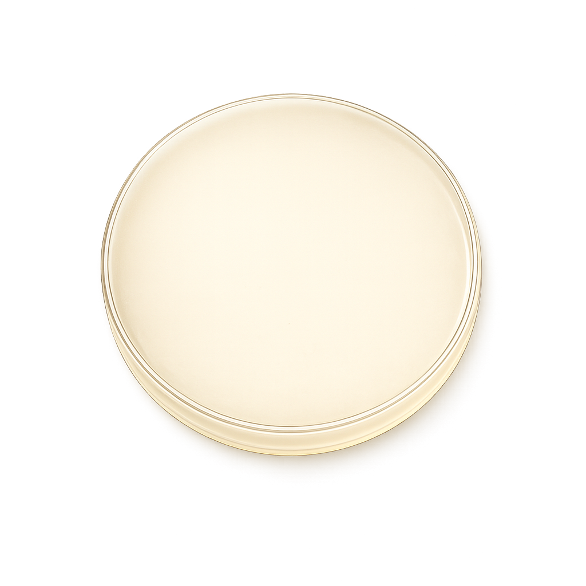

Перетащите изображение
JPG, PNG или TIFF — с микроскопа, телефона или сканера. Обработайте сразу целую папку в пакетном режиме.
- Форматы
- JPG · PNG · TIFF · BMP
- Режим
- Один · Пакет
- Макс. размер
- 16K × 16K
Перетащите фото со смартфона. Petrilya найдёт каждую колонию, посчитает их и выгрузит готовый отчёт. Десктопное приложение с открытым кодом. Без программирования, без облака, без видеокарты.

Три клика от фото в телефоне до отчёта на столе у руководителя.
JPG, PNG или TIFF — с микроскопа, телефона или сканера. Обработайте сразу целую папку в пакетном режиме.
Под капотом — Cellpose. Готовые модели находят все колонии без настройки параметров. Каждой присваивается ID, площадь, диаметр, эксцентриситет.
PDF на одну страницу: превью, гистограмма, таблица. CSV для Excel. JSON-манифест с SHA-256 и параметрами запуска — для воспроизводимости в публикациях.
Под капотом — Cellpose. Предобученные модели находят колонии разной формы и размера без ручной настройки параметров.
JPG, PNG или TIFF прямо из проводника, по одному или папкой.
Клик удаляет ошибку, кисть добавляет пропущенную колонию.
Колесо — приближение, Space + drag — сдвиг, F — вписать.
Укажите мкм/пиксель — и площади получаете в мкм², диаметры в мкм. Готово для раздела «Методы» в публикации.
PDF на страницу, CSV для Excel, JSON-манифест с SHA-256.
Указали папку — получили CSV, PDF и JSON для каждого изображения плюс сводный summary.csv. Можно идти пить чай.
Windows, macOS, Linux. CUDA если есть, обычный CPU если нет.
Нет облака, нет аналитики. Образцы остаются на вашей машине.
Petrilya сейчас в стадии pre-alpha. Установщика пока нет — проект разрабатывается в открытую. Чтобы попробовать текущую сборку, склонируйте репозиторий.
git clone https://github.com/petrilya-app/petrilya-core.git
cd petrilya-core
python -m venv .venv
.\.venv\Scripts\Activate.ps1
pip install -e .
petrilya-uiPetrilya распространяется по двойной лицензии: AGPL-3.0 для открытой сборки и коммерческая лицензия — для организаций, которым нужна локальная установка без обязательств copyleft. Это в том числе изолированные лабораторные сети и процессы под GMP.
Хотите пилот, интеграцию с вашей LIMS или собственные обучающие данные? Напишите: iliarogogvykh@gmail.com